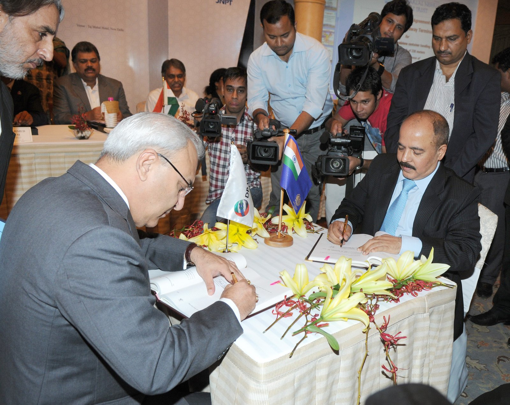

Foreign Trade, Balance of Payments & WTO
An in-depth guide to India's external economic architecture: Current vs Capital Accounts in the Balance of Payments, full current account convertibility, Tarapore roadmaps, the 4 components of Forex reserves, the Bretton Woods twins (IMF & World Bank), and the World Trade Organization (TRIPS, TRIMS & AoA).

Structure of the Balance of Payments (BoP)
Double-entry accounting of all cross-border transactions of an economy
1. Current Account
Operational Trade
Export and import of physical goods (crude oil, precious stones, electronics, chemicals).
Balance of Trade (BoT) = Visible Exports − Visible Imports (Historically in deficit for India due to crude oil import reliance).
- Services (Non-factor services): Software/IT services, business outsourcing, tourism, transport, finance (Consistently runs large surplus).
- Transfers (Unilateral transfers): Remittances sent home by NRI diaspora, foreign grants, gifts (India is the world's largest recipient of inward remittances >$120 Billion).
- Income (Factor income): Net investment income, profits, dividends, and interest on external debt.
*Current Account Deficit (CAD) occurs when value of imported goods and services exceeds exports + net transfers. CAD is financed through capital inflows.
2. Capital Account
Assets & Liabilities- Foreign Direct Investment (FDI): Long-term investment with active management stake (>10% equity). Non-volatile, brings technology and jobs.
- Foreign Portfolio Investment (FPI / FII): Short-term investment in domestic stocks/bonds (<10% equity). Highly volatile ("hot money").
- External Commercial Borrowings (ECBs): Commercial loans raised by Indian corporates from non-resident lenders.
- External Assistance: Sovereign concessional loans from World Bank, ADB, or bilateral partners (e.g. JICA).
- Banking Capital: Non-Resident Indian (NRI) deposits held in Indian banks (FCNR, NRE, NRO accounts).
*BoP Accounting Identity: Current Account + Capital Account + Errors & Omissions = Change in RBI Foreign Exchange Reserves (ΔForex).
Currency Convertibility & Foreign Exchange Architecture
From LERMS to Article VIII status, Tarapore recommendations, and Forex constituents
Evolution of Rupee Convertibility
- Dual Exchange Rate (LERMS 1992): Liberalized Exchange Rate Management System introduced a 40:60 dual rate (40% surrendered at official rate, 60% at market rate). Unified into unified market rate in March 1993.
- Current Account Convertibility (1994): India accepted Article VIII obligations of IMF in August 1994, granting complete freedom to convert rupees for trade, travel, education, and medical expenditures.
- Capital Account Convertibility (Tarapore Committees): Full Capital Account Convertibility (FCAC) remains partial. Two committees chaired by S.S. Tarapore (1997 & 2006) laid down strict preconditions:
- Fiscal deficit brought down to 3.5% of GDP.
- Gross NPAs of banking system reduced below 5%.
- Inflation rate maintained within a 3–5% band.
- Adequate foreign exchange cover for at least 6 months of imports.
India's Foreign Exchange Reserves (Forex)
Custodied and managed by the Reserve Bank of India (RBI) under the RBI Act 1934 and FEMA 1999. India's reserves exceed $650 Billion, structured across 4 constituents:
US Dollars, Euros, British Pounds, Japanese Yen invested in overseas sovereign securities.
Physical bullion held in RBI vaults in Nagpur and Bank of England vaults.
Supplementary foreign exchange reserve assets allocated by the IMF.
The portion of quota paid in reserve assets to IMF; callable on demand without fee.
The Bretton Woods Twins: IMF & World Bank Group
Established at the July 1944 United Nations Monetary and Financial Conference in Bretton Woods, USA
International Monetary Fund (IMF)
Washington D.C.Founded to ensure the stability of the international monetary system, exchange rates, and international payments. Acts as a short-to-medium term lender of last resort to countries encountering Balance of Payments crises.
World Bank Group (5 Institutions)
Washington D.C.Focuses on long-term economic development, infrastructure financing, and global poverty alleviation. Comprises 5 distinct institutions:
World Trade Organization (WTO) Framework
From GATT 1947 to Marrakesh 1995, core principles, TRIPS, TRIMS, and Agricultural Subsidies
Core WTO Principles
- Most Favoured Nation (MFN - Art 1 GATT): Treating other member nations equally. If a special tariff favor is granted to one nation, it must immediately be granted to all WTO members.
- National Treatment (Art 3 GATT): Imported and locally-produced goods must be treated equally once the imported goods have entered the domestic market (no discriminatory domestic taxes or regulations).
- Predictability through Binding: Ceilings placed on tariff rates; tariffs cannot be arbitrarily raised.
TRIPS, TRIMS & GATS
- TRIPS: Trade-Related Aspects of Intellectual Property Rights. Standardizes international IP protections across Patents (20 years), Copyrights (50+ years), Trademarks, Industrial Designs, and Geographical Indications (GI).
- TRIMS: Trade-Related Investment Measures. Prohibits host countries from applying domestic content requirements (e.g. mandating local component sourcing on foreign investors).
- GATS: General Agreement on Trade in Services across 4 modes: Cross-border supply, Consumption abroad, Commercial presence, and Movement of natural persons.
Agreement on Agriculture (AoA)
Green Box: Non-trade distorting government supports allowed without limits (agricultural R&D, environmental programs, pest control, disaster relief).
Blue Box: Direct payments under production-limiting programs (amber box with conditions, exempt from reduction).
Amber Box: Direct price support and input subsidies (MSP, fertilizer/power subsidies) that distort trade. Capped at 10% de minimis limit of agricultural production value for developing countries (guarded by the Bali Peace Clause).
Regional Multilateral Development Banks
Key facts, headquarters, and Indian voting shares across regional development institutions
Asian Development Bank (ADB)
Est. 1966
Headquarters: Mandaluyong, Metro Manila, Philippines.
Ownership: 68 member countries. Japan and the United States are the two largest shareholders (15.6% each). India is the 4th largest shareholder.
New Development Bank (NDB)
Est. 2014
Headquarters: Shanghai, China.
Origin: Established by BRICS nations at the 6th BRICS Summit in Fortaleza, Brazil. Initial authorized capital of $100 Billion equally shared (20% each) among the five founding BRICS members. First President was K.V. Kamath.
AIIB
Est. 2016
Headquarters: Beijing, China.
Asian Infrastructure Investment Bank: Multilateral bank financing sustainable infrastructure. China is the largest shareholder (26.6% voting power), followed by India as the 2nd largest shareholder (~7.6% voting power) and largest recipient of project financing.
Active Recall Flashcards
Interactive 3D flip cards covering BoP classification, Forex constituents, and global financial organizations
High-Yield Prelims Exam Simulator
Five standard multiple-choice questions on ICSID membership, remittances in BoP, Tarapore roadmaps, and WTO boxes